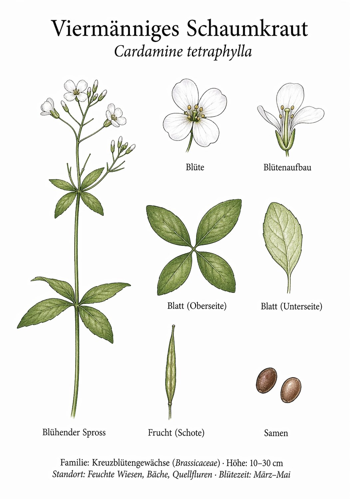

Viermänniges Schaumkraut


Vier statt sechs – ein botanisches Merkmal
Kreuzblütler haben normalerweise sechs Staubblätter – vier lange, zwei kurze. Beim Viermännigen Schaumkraut fehlen die beiden langen regelmäßig: nur vier bleiben übrig. Dieser Unterschied ist winzig, aber eindeutig – und hat der Art ihren deutschen Namen gegeben. Wer beim Ehrenpreis-Bestimmen schon einmal Staubblätter gezählt hat, der zählt hier weiter: eine Fertigkeit, die jeden guten Botaniker auszeichnet.
Schoten wie Stäbchen
Die reifen Schoten des Viermännigen Schaumkrauts sind unverwechselbar: lang, schmal und steil aufrecht am Stängel – wie ein Bündel dünner Stäbchen. Bei Berührung öffnen sie sich explosionsartig und schleudern die Samen fort. Dieser Mechanismus – Ballochorie – kann man im Hochsommer live erleben: Ein leichter Strich an einem reifen Stängel, und es knistert wie Mini-Feuerwerkskörper.